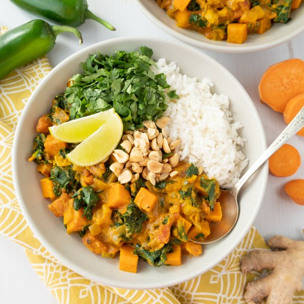

Spicy African Peanut Curry with Sweet Potato, Kale, Cilantro & Rice

Prep Time
35 min
Nutrition (per serving)
675.2 kcalCalories
22.3 gProtein
92.7 gCarbs
28 gFat
Full nutrition table
| Calories | 675.2 kcal |
| Total fat | 28 g |
| Saturated fat | 7.5 g |
| Trans fat | 0 g |
| Cholesterol | 0 mg |
| Sodium | 158 mg |
| Carbohydrates | 92.7 g |
| Fiber | 15.1 g |
| Sugars | 15.7 g |
| Protein | 22.3 g |
| Potassium | 1640.8 mg |
| Calcium | 247.5 mg |
| Iron | 7.2 mg |
| Vitamin A | 17039.7 IU |
| Vitamin C | 99.3 mg |
| Vitamin D | 0 IU |
Cookware
Ingredients
- 1 cupbasmati rice
- 16 fl ozchicken or vegetable broth
- 1 small bunchcilantro
- 2 (14.5 oz) cansdiced tomatoes
- 4 clovesgarlic
- 2 (1 inch) piecesginger root
- 2jalapeño peppers
- 1 bunchkale
- 1lime
- ¼ cuppeanuts, roasted unsalted
- 1 lbsweet potato
- 2 mediumyellow onions
- curry powder
- natural peanut butter
- salt
- virgin coconut oil
Steps
- Using a strainer or colander, rinse the rice under cold, running water, then drain and transfer to a medium saucepan. Add water and bring the mixture to a boil over high heat.1 cup basmati rice
2 cup water - Once the liquid comes to a boil, add salt, stir the mixture, cover the saucepan, and reduce heat to low. Cook rice until liquid is fully absorbed, 15-18 minutes. Once done, remove rice from the heat and let it stand, still covered, for 5 minutes.½ tsp salt
- Meanwhile, wash and dry the fresh produce.2 (1 inch) pieces ginger root
2 jalapeño peppers
1 lb sweet potato
1 bunch kale
1 small bunch cilantro
1 lime - Peel and mince garlic and ginger; transfer to a medium bowl.4 cloves garlic
- Quarter jalapeño peppers lengthwise; seed and remove ribs with a spoon. Finely dice and add to the bowl with the garlic; set aside. (Be careful with jalapeños; do not touch your eyes and ensure you wash your hands after handling or wear gloves while preparing.)
- Preheat a large pot over medium heat.
- While the pot heats up, peel and small dice onions.2 medium yellow onions
- Once the pot is hot, add oil and swirl to coat the bottom. Add onion and cook, stirring occasionally, until softened, about 5 minutes.4 tsp virgin coconut oil
- Meanwhile, peel and medium dice sweet potatoes.
- Add garlic, ginger, jalapeños, curry powder, and salt to the pot. Cook, stirring constantly, until fragrant, about 1 minute. (Reserve bowl for later.)2 tbsp curry powder
1 tsp salt - Add broth, tomatoes, peanut butter, and sweet potato to the pot. Stir to combine and bring to a simmer over medium-high heat. Reduce heat and simmer, stirring occasionally, until sweet potato begins to soften, about 10 minutes.16 fl oz (2 cups) chicken or vegetable broth
2 (14.5 oz) cans diced tomatoes
½ cup natural peanut butter - Meanwhile, fold kale leaves in half lengthwise and slice off the stems. Chop or tear leaves into bite-sized pieces, place in the reserved bowl, and set aside.
- Coarsely chop peanuts. Shave cilantro leaves off the stems; discard stems and mince the leaves. Set both aside.¼ cup peanuts, roasted unsalted
- Add kale to the simmering curry and stir to combine. Continue to simmer, stirring occasionally, until veggies are tender, about 5 minutes.
- While the curry finishes cooking, slice lime into wedges.
- To serve, divide rice and curry between bowls; top with peanuts, cilantro, and a squeeze of lime. Enjoy!